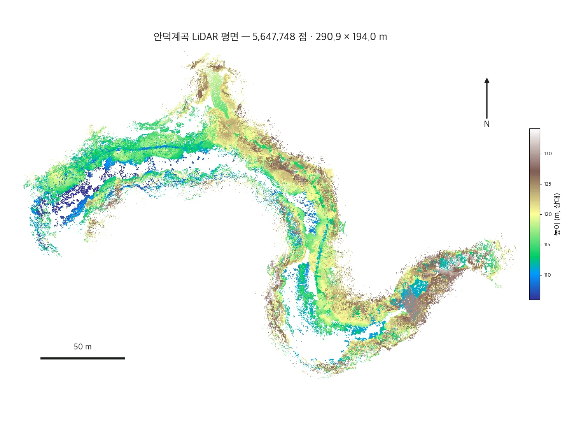
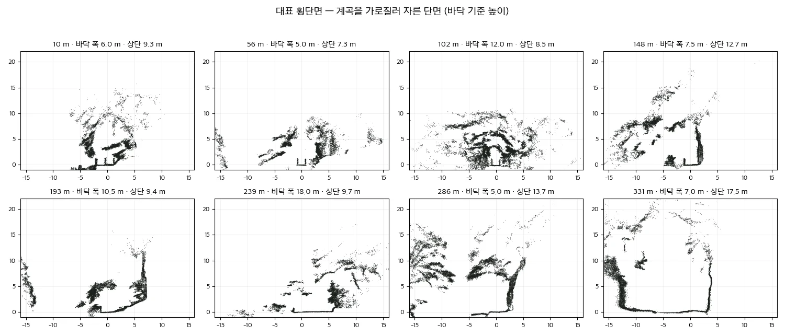
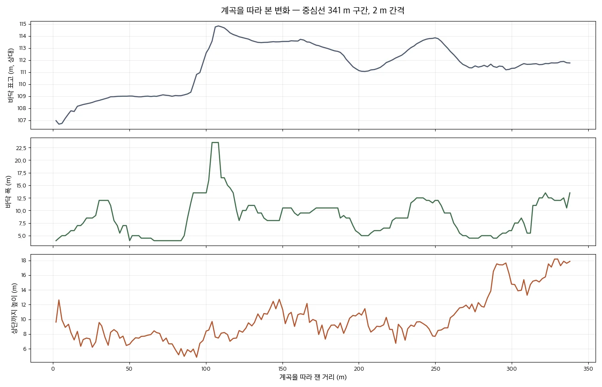

안덕계곡 계곡부를 6개 세션으로 나눠 걸으며 스캔해 하나의 좌표로 통합했습니다. 숲에 가려 GPS가 약한 계곡이라, 야외에서도 여러 번의 스캔을 하나로 맞춰 통째로 측정했습니다.
안덕계곡 계곡부를 6개 세션으로 나눠 걸으며 스캔해, 하나의 좌표로 통합했습니다.
울창한 숲에 가려 위성 신호가 약한 계곡입니다. 이런 환경에서도 여러 번의 스캔을 하나로 맞춰, 야외 계곡을 통째로 측정했습니다.
| 세션 | 구분 | 시간 | 이동 거리 | 점 수 |
|---|---|---|---|---|
| 06-18 12:53 | 계곡 아래로 내려감 | 3.1 분 | 167 m | 1,067,323 |
| 06-18 13:05 | 같은 길 되올라옴 | 2.5 분 | 122 m | 845,121 |
| 06-18 13:08 | 동쪽 구간 | 2.3 분 | 138 m | 939,286 |
| 06-18 13:11 | 동쪽 구간 | 2.7 분 | 115 m | 915,875 |
| 06-18 13:23 | 동쪽 구간 | 3.0 분 | 120 m | 1,119,679 |
| 06-18 13:27 | 가장 긴 세션 · 정합 기준 | 3.1 분 | 174 m | 1,036,419 |
합친 점군 5,647,748 점(5 cm 간격) · 스캔 범위 동서 290.9 m × 남북 194.0 m · 1 m 격자 점유 평면 16,476 m² · 점군 수직 범위 40.9 m. 스캔 범위·면적·높이차는 점군에서 직접 잰 값입니다.
| 항목 | 값 |
|---|---|
| 합친 점군 | 5,647,748 점 (5 cm 간격) |
| 스캔 범위 | 동서 290.9 m × 남북 194.0 m |
| 점군 수직 범위 | 40.9 m |
| 스캔 평면 면적 (1 m 격자 점유) | 16,476 m² |
| 1 m 격자별 바닥~최상단 높이차 | 중앙 8.6 m · p90 17.8 m · 최대 31.6 m |
| 계곡 횡단면 — 바닥 폭 | 중앙 8.5 m |
| 계곡 바닥 낙차 (종단) | 8.1 m |
마지막 줄은 계곡 깊이가 아니라, 1 m 격자마다 점군의 바닥부터 가장 높은 점까지의 높이차입니다. 숲이라 나무 수관이 함께 잡힙니다.



3D 점군과 지도를 브라우저에서 돌려 보며, 단면 · 폭 · 천장고 · 단면적 · 체적을 위치 · 각도 · 길이 · 넓이까지 자유롭게 조절하며 직접 잴 수 있는 측정 페이지로 만들었습니다.
야외 계곡이라 단면의 「천장」은 동굴 천장이 아니라 계곡 벽 위쪽과 나무 수관입니다. 천장고·단면적을 동굴 수치처럼 읽으면 틀립니다.
저용량 점군으로 몇 초 안에 열리고, 필요하면 [원본]으로 정밀하게 다시 잽니다. 자동 측정값은 사람·장비·난간에 영향을 받으니, 정확한 값은 '직접 재기'로 확인하세요.